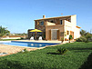
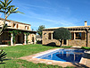
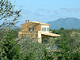
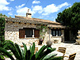
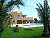
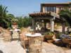
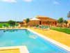

Objektübersicht Fincas und Fincahotels
Fincas Mallorca
| Name | Kurzbeschreibung | Wochenpreis | |
|---|---|---|---|
| Pool-Finca Cecilia | Pool-Finca ohne direkte Nachbarn mit ganz besonderem Flair 3 Schlafzimmer, max. 6 Personen |
ab 1113,00 € |  |
| Pool-Finca Coloma | Traumhafte Erholungsoase nahe des Es Trenc Strandes 4 Schlafzimmer, max. 5 Personen |
ab 973,00 € |  |
| Pool-Finca Emilia | Poolfinca ohne Nachbarn in der Nähe vom Es Trenc. 6 Schlafzimmer, max. 14 Personen |
ab 1113,00 € |  |
| Pool-Finca Juana | Mallorca zum Verlieben... in dieser Finca nahe Es Trenc 4 Schlafzimmer, max. 8 Personen |
ab 1113,00 € |  |
| Pool-Finca La Canova | Großzügige Poolfinca nur 2 km vom Naturstrand Es Trenc entfernt 5 Schlafzimmer, max. 10 Personen |
ab 1113,00 € |  |
| Pool-Finca Mandarina | Atemberaubende Lage inmitten von süßlich-duftenden Orangenbäumen 3 Schlafzimmer, max. 6 Personen |
ab 763,00 € |  |
| Pool-Finca Molin Son Nyikis | Restaurierte Mühle...mit außergewöhnlicher Atmosphäre und Pool 3 Schlafzimmer, max. 6 Personen |
ab 1113,00 € |  |
| Pool-Finca Rafaela | Schöne Pool-Finca auf Mallorca mitten im Grünen ohne Nachbarn 3 Schlafzimmer, max. 6 Personen |
ab 875,00 € |  |
| Pool-Finca Sophia | Poolfinca mit vielen Sitzgelegenheiten lädt zum Erholen ein 4 Schlafzimmer, max. 8 Personen |
ab 1253,00 € |  |
| Pool-Finca Sa Sortha | Verträumte Pool-Finca mit Whirlpool in einem sep. Schlafzimmer und sehr gepflegtem Aussenbereich 4 Schlafzimmer, max. 8 Personen |
ab 1253,00 € |  |
| Pool-Finca Theresa | Wunderschöne Pool-Finca mit Zentralheizung und separater Poollandschaft 4 Schlafzimmer, max. 8 Personen |
ab 1190,00 € |  |
| Pool-Finca Valentina | Traumhafte Pool-Finca mit unendlich viel Platz! 5 Schlafzimmer, max. 10 Personen |
ab 1820,00 € |  |
Landhotels Mallorca
| Name | Kurzbeschreibung | Wochenpreis | |
|---|---|---|---|
| Landhotel Ses Rotes Velles | Landhotel | ab 385,00 € |  |
| Landhotel Es Turo | Landhotel | ab 385,00 € |  |
| Landhotel Es Torrent | Landhotel - Individuell reisen und auf Hotelservice nicht verzichten | ab 343,00 € |  |
| Landhotel Son Sala | Landhotel - schöne, gepflegte Anlage mit sehr freundlicher Familien-Atmosphäre | ab 343,00 € |  |
| Molin Romantica | Mühle - ... typisch mallorquin und mit viel Platz | ab 413,00 € |  |
| Seminarhaus | Luxus-Apartments - ...und Seminarhaus in Llucmajor. | ab 623,00 € |  |